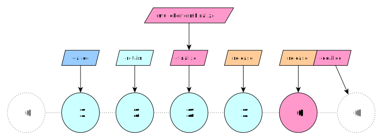
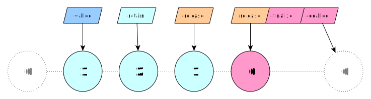

NSObject: -finalize
One of the most intriguing aspects of mulle-objc’s memory management is the
-finalize method. This method serves a crucial role in resource management,
particularly for cleaning up external resources like file handles. It’s
guaranteed to run only once in an object’s lifetime, either through -release
or -mullePerformFinalize. Here’s how you might implement it:
@implementation Person
- (void) finalize
{
if( _fileHandle != -1)
{
close( _fileHandle);
_fileHandle = -1;
}
[super finalize]; // release properties
}
- (void) dealloc
{
[_address release];
[super dealloc]; // always call super last
}
@end
Notice how -finalize handles resource cleanup, while -dealloc focuses on
releasing retained objects. This separation of concerns allows for more robust
and predictable cleanup processes.
-mullePerformFinalize runs -finalize on demand
You can use -mullePerformFinalize to finalize an object “manually”:

The finalization can happen in the “middle of the lifetime” of the object.
And it is guaranteed that -finalize is only called once.
LAW: Never call
-finalizedirectly, always use-mullePerformFinalize
A finalized object is still useable in the object hierarchy, but it is not active anymore. An example, where this is useful, is a window controller, where the window close button has been clicked. It may still redraw, but it doesn’t react to any event actions any more.
-finalize runs automatically before -dealloc
When the -retainCount is decremented to zero via -release, an object gets
the -finalize message, unless -mullePerformFinalize has been called on it
already:

If the -retainCount remains unchanged throughout -finalize, then -dealloc
is called afterwards.
During -finalize all @properties will be cleared. So -finalize is used to free resources and cut links to other objects. Objects that are cleared by -finalize will be released with -autorelease and not with -release. -dealloc will ideally at most contain -release calls and [super dealloc]. Anything else can be done in -finalize.
Important -finalize considerations
-finalize can happen at any time, so the rules differ from those of -dealloc
which is guaranteed to run only single-threaded with a retainCount of 1. In
contrast to -dealloc:
- Use
-autoreleaseto release instance variables andnilthem - You can use using property setters for the release of instance variables.
- Call
[super finalize]when convenient, or omit if you handle all properties yourself
You can write -finalize/-dealloc portably
If you use -finalize, you will be incompatible with non-ARC Apple. This can be
remedied, by structuring your -finalize/-dealloc code like this:
- (void) _finalize
{
}
- (void) finalize
{
[self _finalize];
[super finalize];
}
- (void) dealloc
{
#ifndef __MULLE_OBJC__
[self _finalize];
#endif
[super dealloc];
}
Caveat
-finalize is single-threaded, just like -init and -dealloc when called
during release. When you invoke -mullePerformFinalize it can only be
guaranteed, that no other thread will be executing -finalize (ever). But it
is not guaranteed that no other thread is accessing the object. That’s
different to -dealloc, where the guarantee is that no other thread will
ever call this object again.